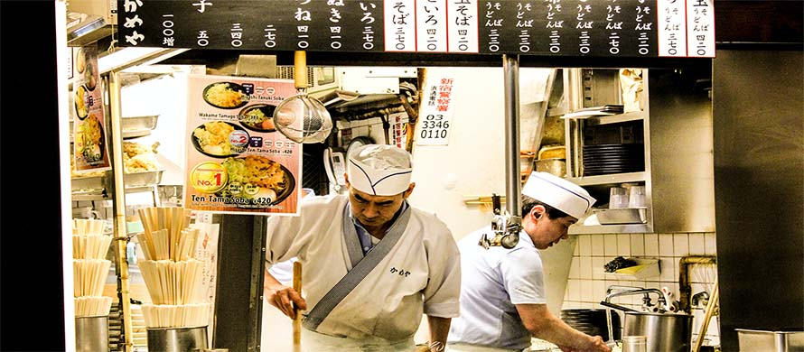

While staying in Japan lodging will be needed there are quite a
few options to choose from. Some of these include hostels,
business hotels, ryokans, minshukus, temples, apartments, love hotels,
capsule Hotels, and more.

Getting familiar with what foods there are and where to shop is important.
Many people nowadays are familiar with sushi and tempura, there's a lot more
to Japanese cuisine than these two delicacies alone. The country boasts a vast
array of tempting and exotic foodstuffs, the best of which are exquisite works of
art rather than mere stomach-fodder.